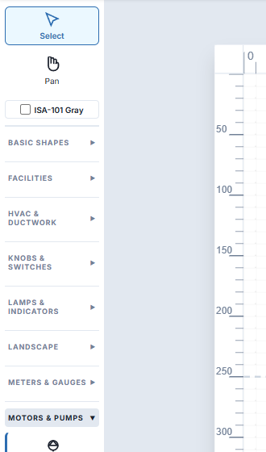
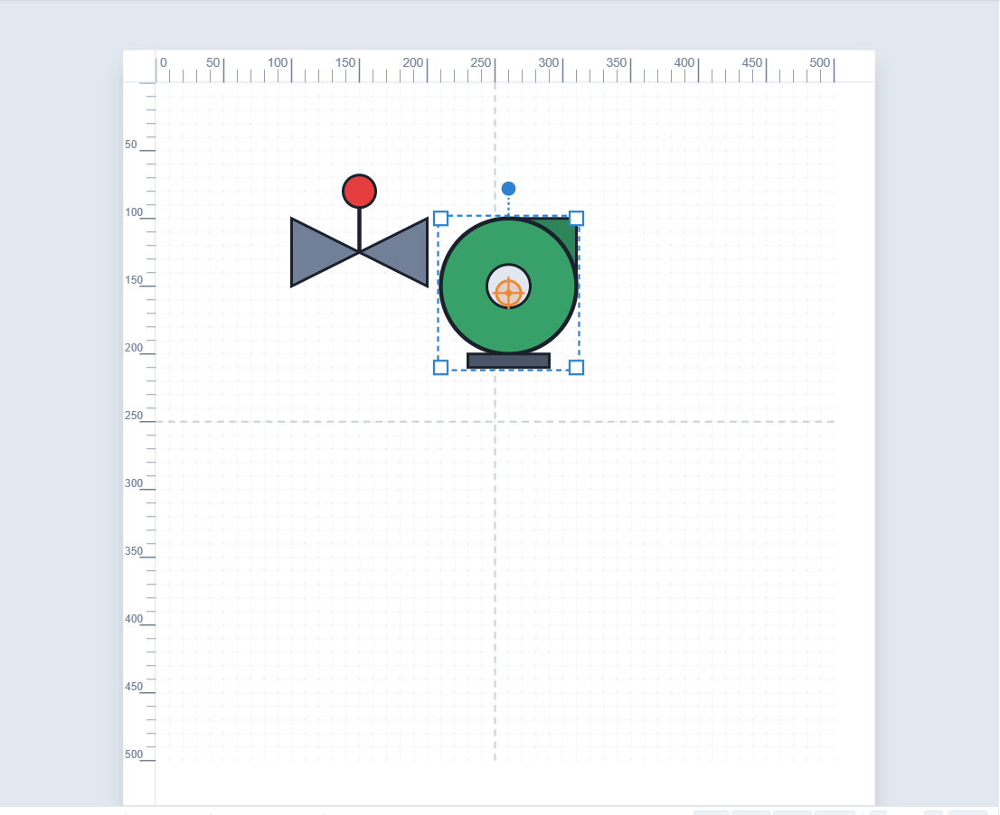
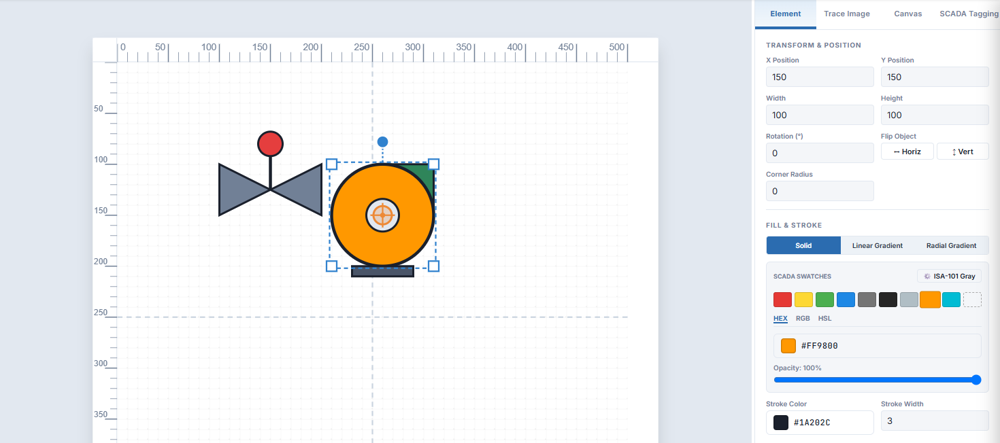
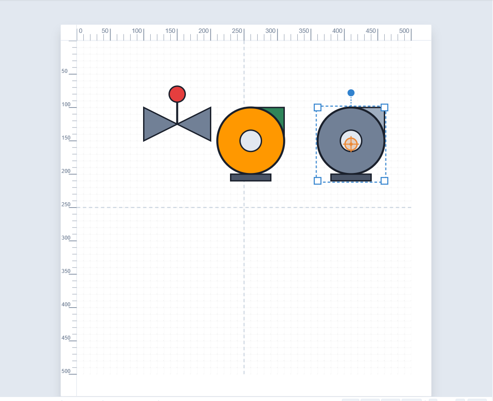

SimpleVG › Tutorial › Chapter 4
Below Basic Shapes in the Toolbox are ten libraries of ready-made symbols: Facilities, HVAC & Ductwork, Knobs & Switches, Lamps & Indicators, Landscape, Meters & Gauges, Motors & Pumps, Pipes & Connectors, Sensors, and Valves & Vessels.
Click a library heading to expand it. Here is MOTORS & PUMPS, which offers a Pump, an AC Motor, an Agitator and a Blower Fan.

Click a symbol once and it is added to the canvas and selected. Do the same for a Valve Body from VALVES & VESSELS, then drag the pump to the right of the valve to make room.

A symbol is a group: several shapes that move, resize and rotate as one. That is why one click gives you a complete pump.
Because symbols are groups, you can open them up. Select the pump and click Ungroup in the menu bar (or press Ctrl+Shift+G). The pump becomes separate shapes: the casing, the outlet nozzle, the centre hub and the base.
Now click just the casing and pick the amber swatch in the Inspector. Only that part changes colour.

Press Ctrl+G to group the parts again once you are happy, so the pump moves as one.
ANSI/ISA-101 is the standard for process HMIs. It recommends muted gray backgrounds and neutral symbol colours, so that real alarms stand out. SimpleVG has a one-click way to follow it.
At the top of the Toolbox, above the library sections, is the ISA-101 Gray checkbox. Tick it, then drop another pump. It arrives in neutral gray instead of the default green.

The tick stays set until you clear it, so everything you add from then on is gray.
In the next chapter we save the work and export it for use elsewhere.